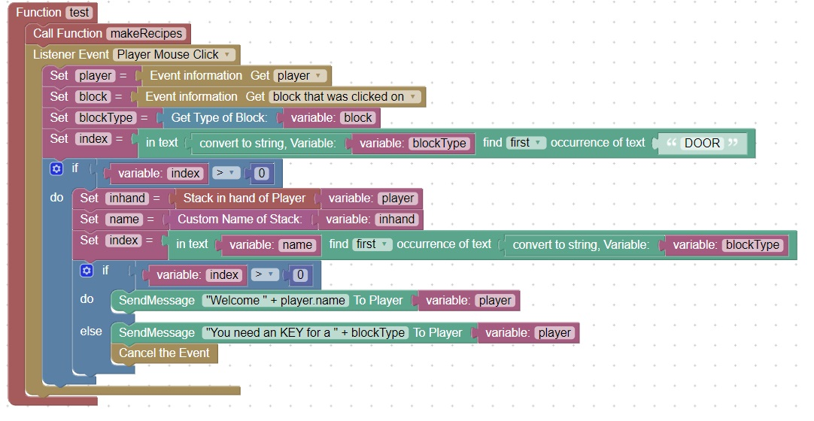
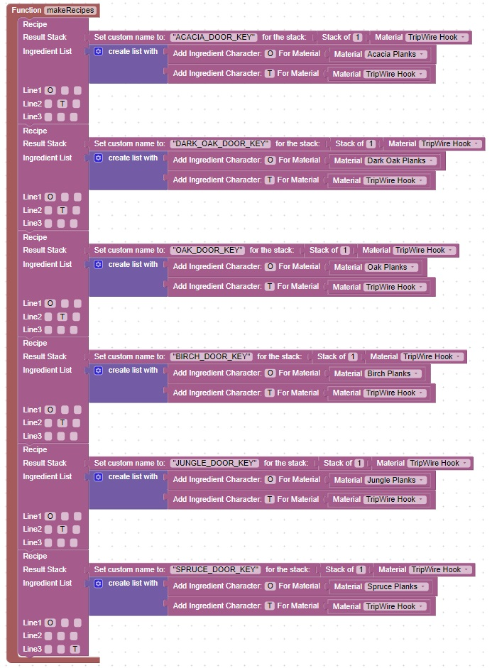

Creating a locked maze
Note: Perform an update as described here before attempting this homework (thanks).
This exercise is an extension of the topic discussed in class: OAK KEY
Assignment
Create a maze or group of connected rooms that have various types of doors, such as birch door, dark oak door, oak door, etc
Create a recipe for different matching door keys as described in the OAK KEY class topic above, or provide an anvil which players can craft their particular keys
Create plugin logic which will cancel a player mouse click on a door unless the player is holding the appropriate key in their hand,
as described in the OAK KEY class topic above.
Then add code to handle other door types
You can use this diagram as a reference:

The above diagram makes use of a call function which calls this function named makeRecipes

You will need to create both functions together on the same web-page for this code to work properly.